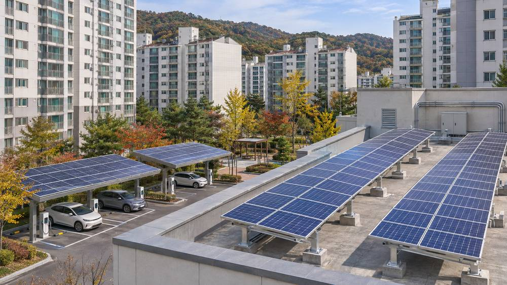

오피니언
황우현 서울과학기술대 명예특임교수, 전국 10만 곳에 자립형 햇빛바람 에너지 타운 제안

타운마다 1MW, 2035년 누적 100GW 구상. 남양주 다산동 5,700세대 단지 검토에서 에너지 자립률 약 45~80%
황우현 서울과학기술대 명예특임교수가 11월 12일 한국전력신문 특별기고에서 도시 6만 곳(통)과 농어촌 4만 곳(리)에 '자립형 햇빛바람 에너지 타운'을 만들자고 제안했다. 타운마다 태양광·풍력·전기차 등 1MW를 설치해 2030년 3만 곳·30GW, 2035년 누적 10만 곳·100GW를 채우는 구상이다. 2027년에 착수해 지자체 242곳이 평균 12곳씩, 약 3,000곳(3GW)에서 시범 사업을 하자는 것이 첫 단계다.
아파트 단지가 주된 터전 황 교수는 전국 2만 1,678개 아파트 단지에 1,233만 호, 3,019만 명(인구의 약 58%)이 산다고 짚었다. 남양주시 다산동 5,700세대 단지는 시민 환경단체의 요청으로 검토했고, 소형풍력·엘리베이터 회생제동·에너지저장장치(ESS)·전기차 양방향 충방전을 더하면 에너지 자립률이 약 45~80%로 나온다고 밝혔다. 사업비의 85%는 프로젝트 파이낸싱으로 조달하고, 나머지는 지자체·사업시행자·주민이 지분대로 맡는다. 단지 2만여 곳에 평균 1MW를 설치하고 설비이용률을 14%로 잡으면 연간 약 25TWh로, 국가 전력소비량의 약 5%에 해당한다.
송전망 병목과 일자리 기고는 북당진-신탕정 송전선로 공사가 150개월 넘게 늦어진 점을 들어, 전력을 쓰는 곳 가까이에서 만드는 방식을 대안으로 내세웠다. 타운마다 전문 중소기업 2곳이 참여하고 기업당 3명을 채용하면 일자리 60만 개가 생기며, 가구당 연 60만~100만 원 규모의 수익을 나눌 수 있다는 계산이다.
정부 계획과의 차이 황 교수는 정부의 2030년 햇빛바람소득마을 목표를 3,000곳으로 인용하며 10만 곳 제안과 견줬다. 10만 곳은 3,000곳의 약 33배다. 정부가 3월 24일 국무회의 보고 뒤 밝힌 계획은 올해 500곳 이상을 선정하고 2030년까지 2,500곳 이상을 조성하는 것으로, 마을 주민 10명 이상이 협동조합을 만들어 마을 유휴부지에 태양광발전소를 설치·운영하는 방식이다.
출처: 한국전력신문 2026-11-12 한국전력신문 원문 보기
출처: 정책브리핑(행정안전부·농림축산식품부·기후에너지환경부 합동 발표) 2026-03-24 올해 '햇빛소득마을' 500개 이상 선정 원문 보기
바로잡습니다(2026.11.18)'정부 목표의 30배'라는 표현이 10만 곳 제안과 맞지 않아(약 33배) 바로잡았습니다.
시민이 만들고 지역이 소유하는 에너지 전환제4섹터 방식 시민주도 지역에너지 공공개발